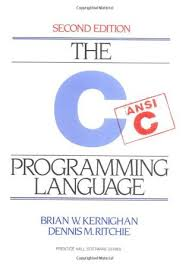
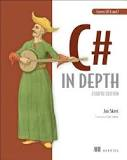
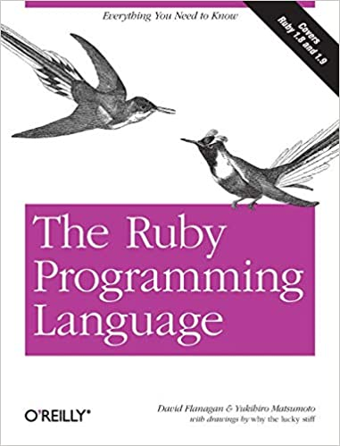

The C PROGRAMMING LANGUAGE
BRIAN W.KERNIGHAN DENNIS M.RITCHIE(1978 published)
This book is for beginner Students which help for learning a c programming easily.This book introduce the "Hello Words" program which prints only the text "hello, world", as an illustration of a minimal working C program Since then, many texts have followed that convention for introducing a programming language .The C programming language is a computer programming language that was developed to do system programming for the operating system UNIX and is an imperative programming language. ... It is a procedural language, which means that people can write their programs as a series of step-by-step instructions .
Learning Python
DAVID ASCHER(1999 published)

Python is a powerful general-purpose programming language. It is used to develop web applications, data science, creating software prototypes and so on. Fortunately for beginners, Python has simple easy-to-use syntax. This makes Python an excellent language to learn to program for beginners. This book is for beginning student which is easily help to understant the things or syntex now a days python is best language in the world It's always worth to learn a programming language that is popular and commonly used. ... If you consider learning Python to get a job as a software developer it seems a reasonable choice. Many well-known companies include Python in their technology stacks which means they also seek talents who can code in this language.
Let Us C
Ashutosh Pandey & Yashavant Kanetkar(1999 published)

This book is ONLY and ONLY for those who have NEVER, I repeat, NEVER EVER programmed before. For those, who have had even a basic programming course, this book isn't for you. The service of Amazon is very good and prompt. So I love it. This book is simply awesome. You can grab each and every point of C in a very simple words. you'll love it after reading it. good it in just 181 rs best price simple basi concept book by yashwant kanetkar .........This book is simply awesome.You can grab each and every point of C in a very simple words. you'll love it after reading it IS .Very good book in language, explanation.
C# in Depth
Jon Skeet(2008 published)
C# in Depth is a book for those who are passionate about C#. It aims to be a bridge between the existing introductory books and the language specification: something readable but detailed, exploring every aspect of the language from version 2 onwards. In the interests of brevity, it doesn't spend much time on C# 1 - readers are already expected to know the first version at least reasonably. Every new feature from C# 2 onwards is covered, however, as shown in the table of contents below.
The Ruby Programming Language
Yukihiro Matsumoto(1995 published)
Ruby is a dynamic, reflective, object-oriented, general-purpose programming language. Ruby is a pure Object-Oriented language developed by Yukihiro Matsumoto. ... The objective of Ruby's development was to make it act as a sensible buffer between human programmers and the underlying computing machinery.